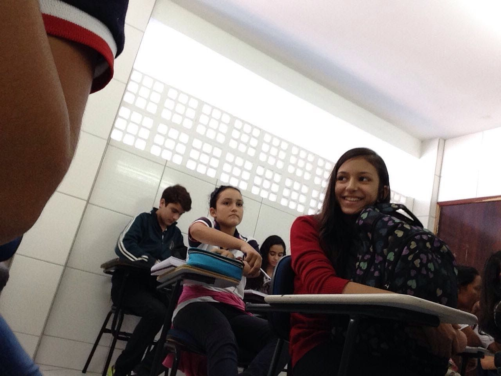
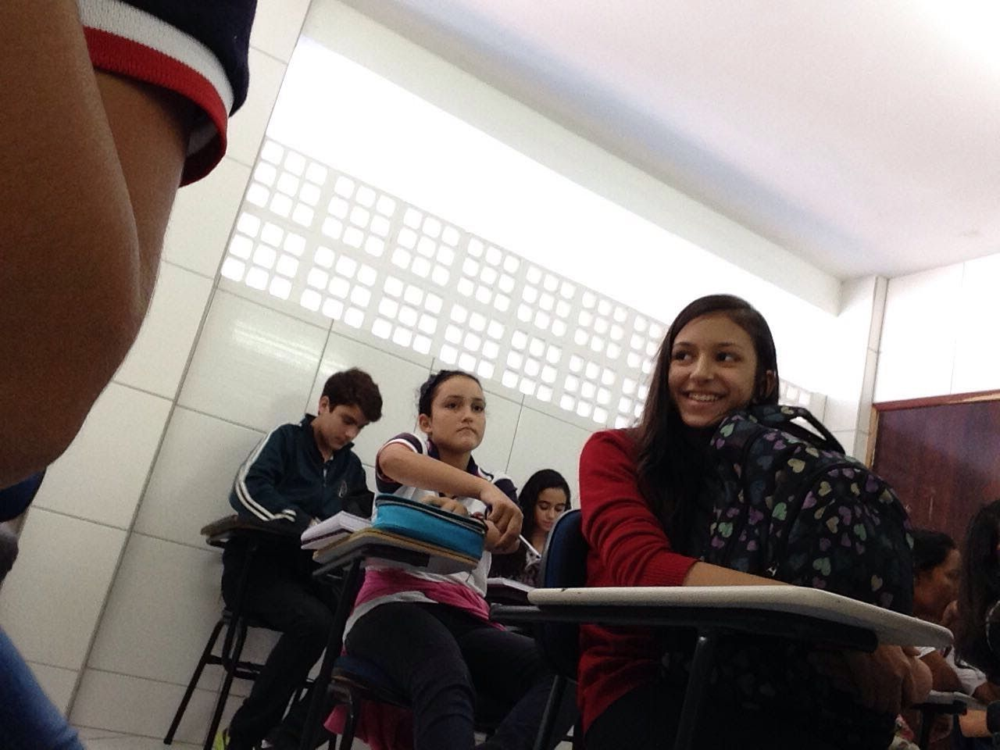

Você é sensacional, Bia 💖🌼
Esperamos que tenha sido um momento incrÃvel!
Te amamos!
(pq ser brega às vezes tb pode ser meio cunt 💅)
Esperamos que tenha sido um momento incrÃvel!
Te amamos!
(pq ser brega às vezes tb pode ser meio cunt 💅)


 
